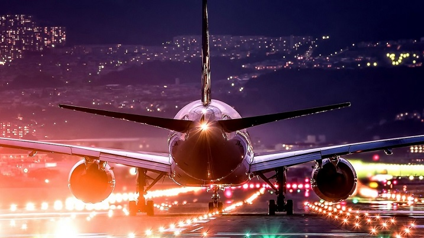

Это был отличный день - Четверг. Несмотря на то, что Виолетта не выспалась, она была рада. Сегодня она улетала в Питер к своим родным, чтобы здорово провести там время. День проходил слегка суетливо, сначала томная работа, потом поездка до аэропорта с симпатичным парнем, который ей очень понравился, а затем долгое ожидание и поиск своего самолета. Около десяти часов началась долгожданная посадка, и Виолетта наконец поднялась на борт самолета SCP 517. Ее встретили приветлевые стюардесы, и пусть не без труда но ВИ все же нашла свое место у окна. После проведения инструктажа по основам безопасности на авиалайнере, самолет начал набирать мощность для взлета. Буквально через 15 минут самолет уже начал медленно подниматься над землей и встал на верный курс до Санкт-Питербурга.

Самолет продолжал медленно набирать высоту, у Ви сразу начало закладывать уши, поэтому она воспользовалась заранее купленными леденцами, которые помогали бороться с данной проблемой. Перед ее прекрасными и синими как небо глазами открылся не менее прекрасный вид на ночную Москву. Эти яркие и переливающиеся разными цветами огоньки завораживали. Однако уже скоро самолет вошел в облачную зону. Город и ночные огни пропали из виду, пассажиры начинали медленно дремать. ВИ слушала музыку через свои наушники и на какое-то время погрузилась в свои мысли. Спустя полчаса она осмотрела салон самолета и обнаружила что в самолете нет ни души. Сначала ей показалось что она спит, но просыпаться ей никак не удавалось. Удивление быстро перерастало в панику. ВИ быстро пробеажала по всем отсекам самолета, но никого не было, ни пассажиров, ни стюардес. За окном был один сплошной туман. Когда ВИ посмотрела на свой телефон и часы то заметила что время больше не идет вперед и показывает странное значение: 66:99.
Казалось что уже прошла целая Вечность, а самолет все летел. Но когда надежда уже начала угасать, внезапно шасси самолета коснулись земли. Виолетта оказалась не гтова к внезапной посадке и ее буквально сбило с ног. Когда она поднялась, то выходы из самолета уже были открыты. ВИ быстро поднялась и сломя голову выбежала из самолета. К великому для неё сожалению, в аэропорте никого не было. Она потыталась дозвониться родственнникам, полиции, кому угодно, но связи не было. Часами плутая по аэропорту она все же нашла выход. Выйдя на улицу, она увидела что там нет ни души. Слезы катились по её щекам. Это было просто нереально. Однако времени на панику не было. Внезапно в ста метрах от нее показался силуэт. ВИ уже было обрадовалась что она не одна, но когда она увидела кто к ней приближается - её ноги подкосились от ужаса. Из далека можно было подумать что это человек, но это было нечто другое. Ростом около двух метров, оно было абсолютно серое, с черными как ночь глазами и желтыми, но очень длинными зубами. Руки это существа были такими длинными что доставали земли, из его спины торчали непонятные наросты. Издав страшный вой эта тварь резко кинулась вперед. ВИ пришла в себя и побежала. Ей удалось спрятаться за одним из столбов. Тварь пробежала мимо...
Спустя мгновение начался кошмарный вой, эта тварь привлекла внимание остальных, со всех сторон начались шорохи. ВИ поняла что если она останется стоять, то ее неприменно найдут. Она забежала в аэоропорт, надеясь найти там укромное место. Она увидела небольшую кафешку, которая когда-то была МакДональдсом, и хотя она не была фантакой фаст фуда, но сейчас это место спасло ей жизнь. Забежав в помещение для персонала, она притаилась. Вскоре она услышала рык и звуки бьющегося стекла и предметов. Эти существа ее искали и попутно нападали друг на друга. Вскоре одно их них оказалось совсем близко. Это было другое создание, и куда более отвратительное чем первое. ВИ совсем не дышала, она пятилась назад, и не заметила как уронила небольшую сетку предназначеную для еды. Это был приговор, существа словно сорвались с цепи и резко бросились в это укрытие, и когда первое из них уже схватила ВИ, кошмар прекратился. Это оказался сон.
Неужели это был сон? Таких кошмаров не было уже давно. Почему то рука сильно болела. Начало приходить страшное осознание, что рука болит именно там где ее схватила тварь, но что было еще страшнее так это то,что в самолете не было никаких звуков...